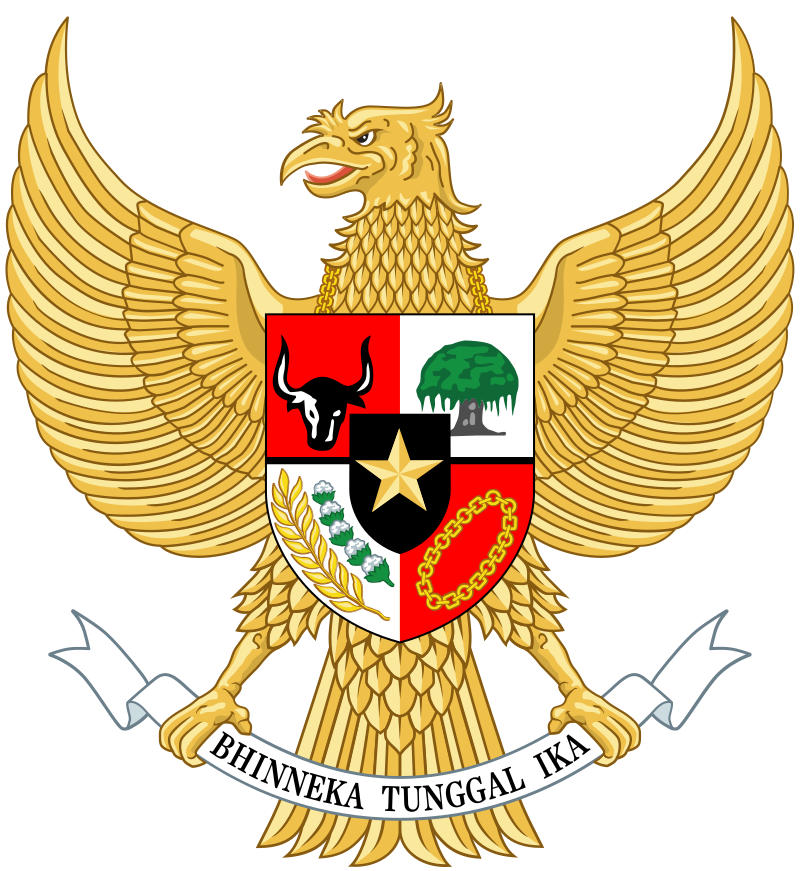
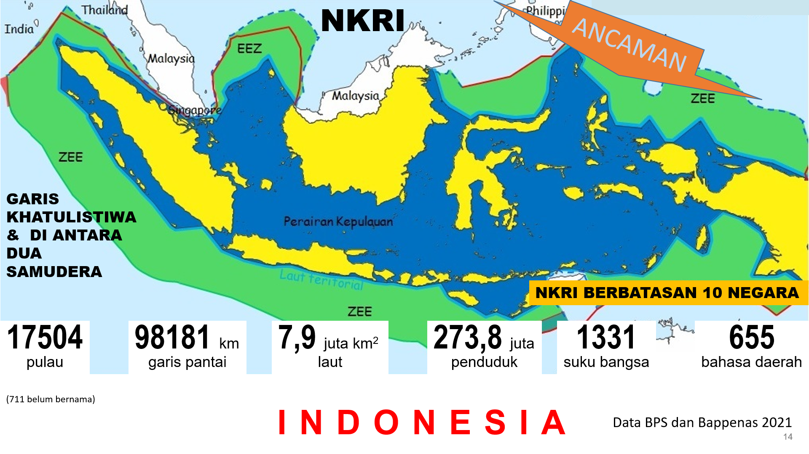

| KONSENSUS DASAR | No | Konsensus | Keterangan | Visual |
| 1 | Pancasila |
Kedudukan & Fungsi Pancasila Sebagai:
|
 |
| 2 | UUD 1945 |
UUD 1945 merupakan hukum dasar tertulis dan tertinggi serta merupakan puncak dari seluruh peraturan perundang-undangan. |
|
| 3 | NKRI |
Berdasarkan amandemen pasal 25A, Indonesia NKRI adalah negara kepulauan yang berciri Nusantara dengan wilayah yang terbatas-batas dan hak-haknya ditetapkan dengan undagan-undang. |
 |
| 4 | Bhineka Tunggal Ika |
Fungsi mendasar Bhineka Tunggal Ika adalah landasan persatuan dan kesatuan. |
|
| Penekanannya kontennya adalah pada ranah menyadarkan bahwa keempat konsensus, yaitu Pancasila, UUD 1945, NKRI, dan Bhineka Tunggal Ika merupakan dasar atau landasan warga negara dalam bersikap, berpikir, berkata & bertindak, untuk mempertahankan kelangsungan hidup bangsa dan negara. | |||